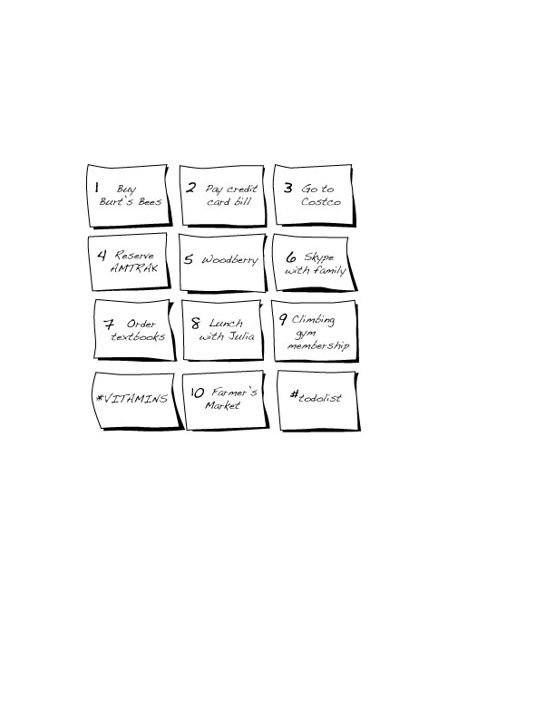

List-Maker
List-Maker is a non-traditional self portrait depicting my efforts to keep things orderly and organized with paper and writings. I make lists for everything, from project due dates to grocery shopping list. The first piece reveals what comes of all the lists I physically make, bringing me anxiety and ironically, disorder, in the midst of making lists after lists. In the second revised piece, I leaned more towards one aspect of my list-making habits and organizing them into a way I can calmly go through and complete each task.

